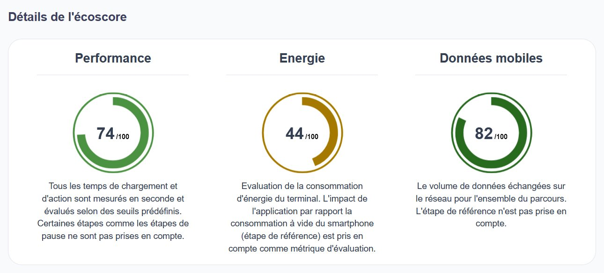
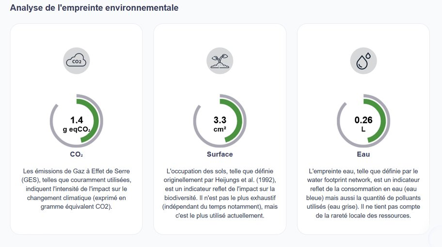
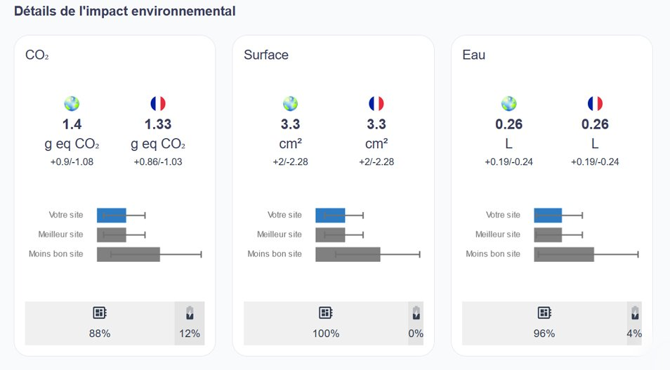
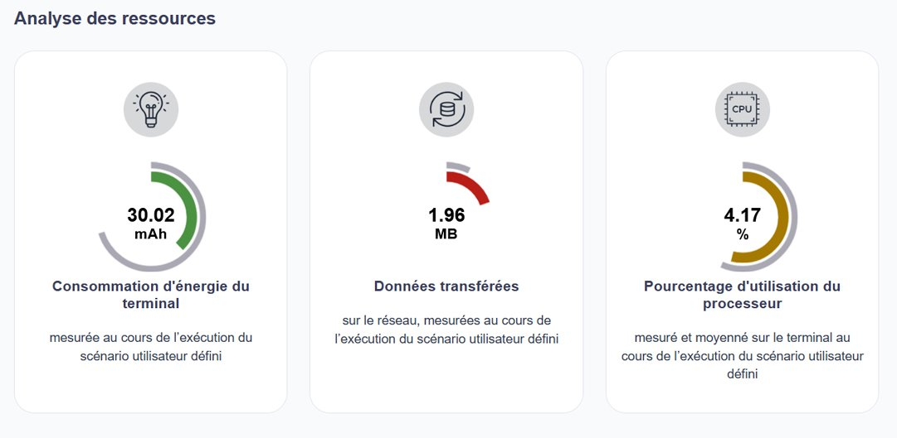
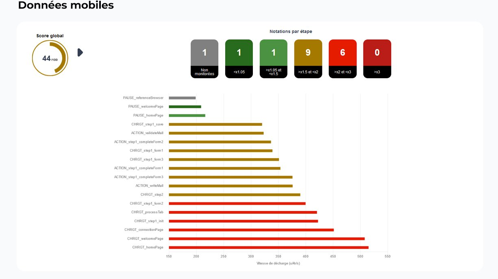
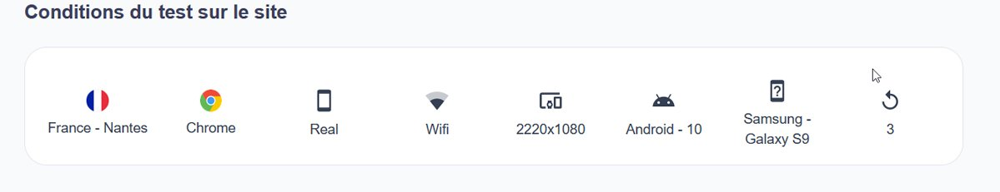

Porté par la Cellule éthique de la Délégation ministérielle au Numérique en Santé et mis en œuvre par l’Agence du Numérique en Santé, ce projet engage les éditeurs du numérique en santé sur la voie de la sobriété numérique
Paris, France – le 15 mai 2023
Atos et Greenspector, alumni de Scaler, l’accélérateur de start-ups d’Atos, annoncent avoir livré à la Délégation ministérielle au Numérique en Santé (DNS) et à l’Agence du Numérique en Santé (ANS) un service de calcul d’un écoscore des applications de santé web et mobiles, accessible en ligne (https://ecoscore-appli.esante.gouv.fr/). Cet outil d’évaluation de l’empreinte environnementale des applications de santé s’inscrit dans le programme de travail de la cellule éthique de la Délégation ministérielle au Numérique en Santé (DNS) qui vise à promouvoir un numérique en santé écoresponsable, initié dans la feuille de route Ma Santé 2022 / « Accélérer le virage numérique en santé » et poursuivi dans la prochaine feuille de route 2027 / “Pour un numérique au service de la santé ». L’écoscore est né de la volonté de la DNS et de l’ANS de mettre à la disposition des éditeurs de santé un outil gratuit, basé sur des mesures fiables et reproductibles, leur permettant d’être autonomes dans l’évaluation de l’impact environnemental de leurs outils web et mobiles. L’écoscore est un des critères obligatoires du référencement des applications de santé dans le catalogue de services de Mon Espace Santé.
Evaluer l’empreinte environnementale sur la base de mesures d’énergie et de ressources IT prises sur un terminal pendant l’utilisation de l’application
L’écoscore est une solution innovante du fait de sa capacité à évaluer l’empreinte environnementale d’une applications web ou mobile sur la base de trois grandeurs : la volumétrie des données échangées, la performance et l’énergie consommée mesurées sur des terminaux réels (banc de mesures) pendant l’utilisation de l’application. Le modèle de projection environnementale respecte les principes de la norme ISO 14040 et couvre l’ensemble des phases de fabrication et d’utilisation (analyse selon la méthode du cycle de vie).
Après avoir décrit un parcours fonctionnel illustrant les étapes canoniques d’un usage réel d’une application de santé, l’éditeur de l’application lance les mesures de manière automatisée sur un banc de mesures distant. Il peut ensuite analyser les résultats et identifier le niveau d’éco-responsabilité de son application web ou mobile, étape par étape.
Une solution co-construite avec l’ensemble des acteurs de l’écosystème du numérique en santé
Afin de valider la modélisation de tous les cas particuliers technologiques et fonctionnels des applications web et mobiles de santé, la DNS et l’ANS ont souhaité associer très tôt les éditeurs à la construction de l’écoscore, notamment dans la préparation des scénarios de tests et l’évaluation de l’ergonomie du service. Le projet a débuté mi 2021 et dès mars 2022, l’outil était accessible à de premiers utilisateurs « pilotes ». Aujourd’hui, le service écoscore a été utilisé par plus de 40 éditeurs publics et privés, candidats au référencement de leurs applications dans Mon Espace Santé, et de nombreux éditeurs sont entrés dans le processus de calcul de leur ecoscore.
Pour Brigitte Séroussi, Directrice de projets à la Délégation ministérielle au Numérique en Santé (DNS), en charge de la cellule ‘éthique du numérique en santé’ et Nathalie Baudinière, Responsable de projets à l’Agence du Numérique en Santé (ANS), « Notre approche d’un numérique en santé éco-responsable, qui intègre un volet éthique et un volet environnemental, a reçu un accueil très favorable au niveau international. Nous nous félicitons de ce qu’elle puisse contribuer aux avancées du secteur de la santé en matière de sobriété numérique au niveau européen et au-delà. Le service écoscore développé par l’ANS et Atos à partir de la méthode de Greenspector a permis de sensibiliser les éditeurs candidats au référencement de leurs applications dans le catalogue de services de Mon espace santé sur le sujet d’un numérique en santé éco-responsable et de les engager dans une démarche d’amélioration continue de l’impact environnemental de leurs solutions ».
« L’alliance de l’expertise d’Atos dans le pilotage de projets complexes et la robustesse de la solution développée par Greenspector a permis de fournir à l’ANS un portail innovant et industrialisé, au cœur des politiques publiques en termes d’environnement. Nous sommes fiers d’avoir pu accompagner la DNS et l’ANS dans cet ambitieux projet réalisé dans le cadre du marché d’Assistance à Maîtrise d’œuvre Informatique et Tierce Maintenance Applicative de l’UGAP, la centrale d’achat public. » expliquent Laurent Laffere, Directeur Secteur Public, Défense et Santé, Atos et Thierry Leboucq, Président de Greenspector.
Télécharger le document PDF
À propos d’Atos
Atos est un leader international de la transformation digitale avec 111 000 collaborateurs et un chiffre d’affaires annuel d’environ 11 milliards d’euros. Numéro un européen du cloud, de la cybersécurité et des supercalculateurs, le Groupe fournit des solutions intégrées pour tous les secteurs, dans 69 pays. Pionnier des services et produits de décarbonation, Atos s’engage à fournir des solutions numériques sécurisées et décarbonées à ses clients. Atos est une SE (Société Européenne) cotée sur Euronext Paris.
La raison d’être d’Atos est de contribuer à façonner l’espace informationnel. Avec ses compétences et ses services, le Groupe supporte le développement de la connaissance, de l’éducation et de la recherche dans une approche pluriculturelle et contribue au développement de l’excellence scientifique et technologique. Partout dans le monde, Atos permet à ses clients et à ses collaborateurs, et plus généralement au plus grand nombre, de vivre, travailler et progresser durablement et en toute confiance dans l’espace informationnel.
À propos de Greenspector
Greenspector est un pionnier français du numérique responsable depuis 2010. Ses innovations technologiques sont mises au service des professionnels via des outils logiciels SaaS et des prestations expertes. Elles permettent la maîtrise et la réduction des impacts environnementaux des services numériques mobile, web et plus largement de tout objet connecté. L’innovation de la solution réside dans une mesure qui reproduit automatiquement les parcours utilisateurs sur des appareils réels distants sans installation préalable. La solution est labellisée par le label Solar Impulse.
Contacts presse
Isabelle Grangé | isabelle.grange@atos.net | +33 (0) 6 64 56 74 88
Thibault Tuffin | ttuffin@greenspector.com
Captures d’écran d’indicateurs de mesure de l’écoscore – source ANS





